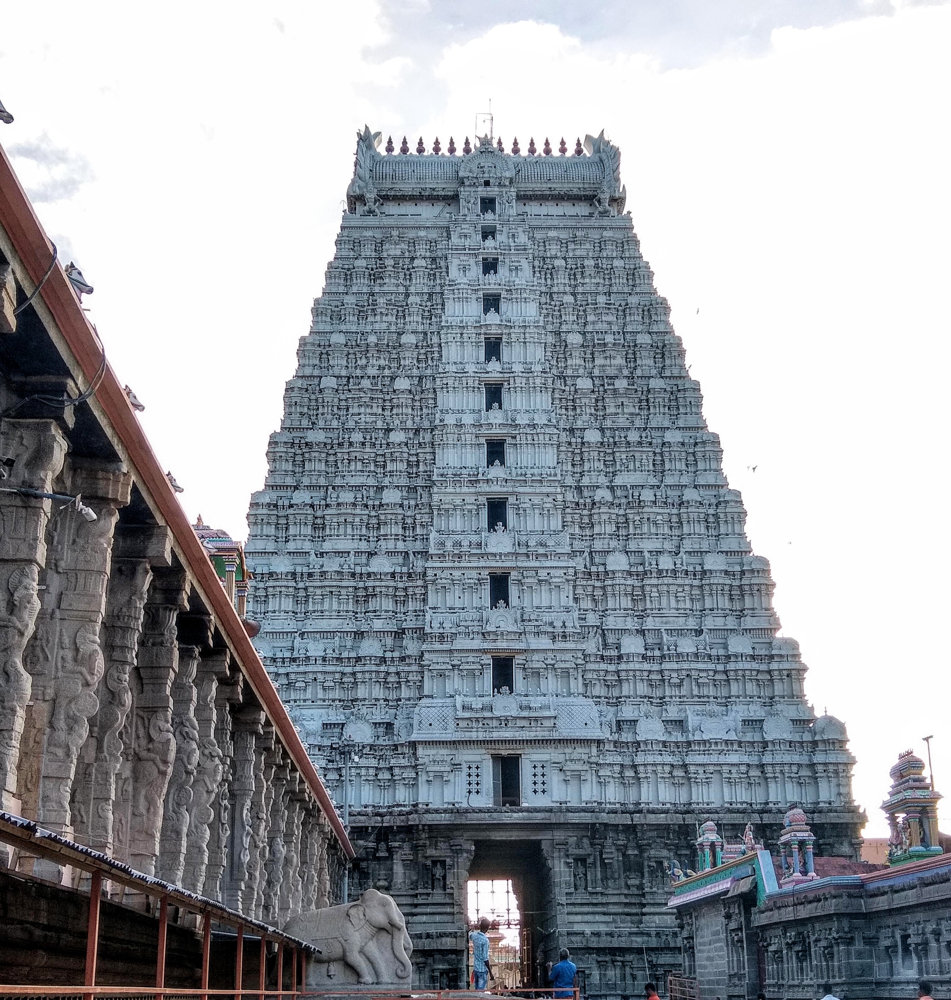

TIRUVANNAMALAI
Raja Gopuram

The Raja Gopuram is the grand entrance tower of the Arunachaleswarar Temple in Tiruvannamalai, Tamil
Nadu.
It is situated in Tiruvannamalai, a significant pilgrimage town in Tamil Nadu, known for the
Arunachaleswarar Temple dedicated to Lord Shiva.
The Raja Gopuram is one of the tallest gopurams (gateway towers) in Tamil Nadu, standing at a height of
about 66 meters (216 feet).
The tower is richly decorated with sculptures depicting scenes from Hindu mythology, including deities,
demons, and celestial beings, all rendered with great artistic detail.